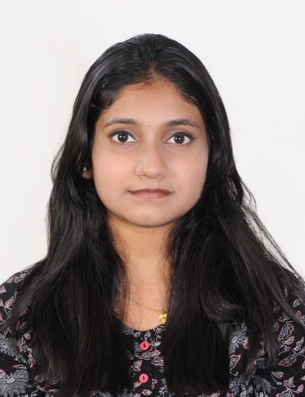

Sabha

Summary
Recent information science graduate with strong programming skills in languages such as C and Python, and experience in software development through internships and group projects.
Education
- BE-Information Science & Engineering
Mangalore Institute of Technology & Engineering, Moodabidri(2019-2023): CGPA-8.49
- Senior Secondary
SVPU College Gangolli, Kundapura(2017-2019): Percentage-77.16%
- Sencondary School(SSLC)
SV English Medium School Gangolli, Kundapura(2016-2017): Percentage-86.24%
Skills
- LANGUAGES: C, C++, Python, JavaScript
- DBMS: SQL
- INTERFACE: HTML, CSS
- TOOLS: Eclipse, PyCharm, Visual Studio Code, MySQL
Project
Communication Assistance for the Elderly:
A user-friendly device for elderly people. It is a transportable device to take care of them easily. Providing them good elderly care by ourself or with the assistance that stops them from feeling isolated and depressed.
Courses and Certifications
- Completed course on ‘PY0101EN: Python Basics for Data Science’ by IBM,April 2021
- Completed course on ‘Nasscom Java’ by Future Skills Prime-Coding Ninjas, April 2021.
- Completed course on ‘Cloud Foundations and Python for Machine Learning’ through Great Learning
platform, 2022.
- Attended Workshop on ‘Web Development Using Java’ conducted by Dlithe, in Mangalore Institute of
Technology & Engineering, Dec 2021.
- Attended Workshop on ‘Cyber Security’ conducted by Dlithe, in Mangalore Institute of Technology &
Engineering, Jan 2021.
Achivements
- Participated Secured Certificate on Online awareness campaign on “Drug Free, tobacco Free & Spit Free
India” conducted by NSS MITE
Other